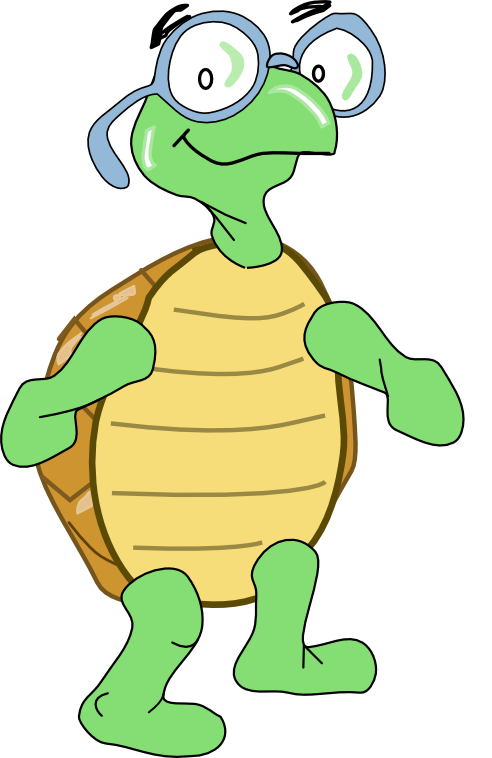
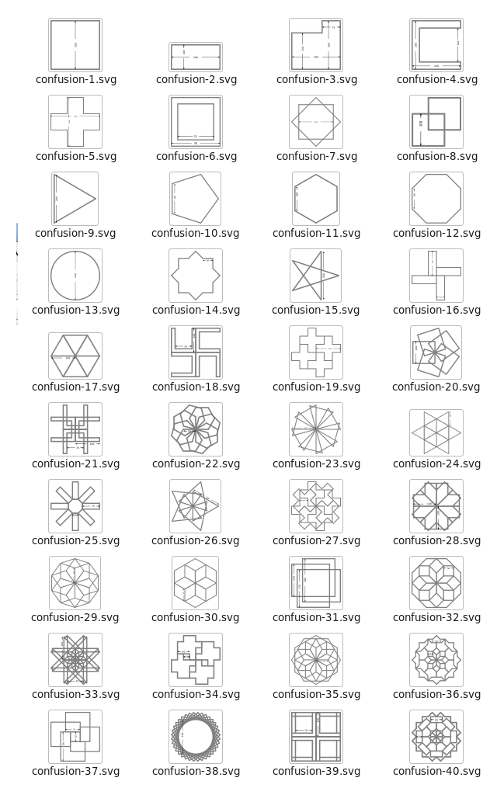

Turtle Confusion¶



What is Turtle Confusion¶
Turtle Confusion presents 40 shape challenges to the learner that must be completed using basic Logo-blocks. The challenges are based on Barry Newell’s 1988 book, Turtle Confusion: Logo Puzzles and Riddles. Gary Stager has put a scan of Barry Newell’s original book on line here (with permission of the author). (en español)
Turtle Confusion is a fork of Turtle Blocks that presents 40 shape challenges to be programmed by moving the Logo turtle.


Additional features:
You can import challenges from the Sugar Journal (save them as an image file)
You can save your results as: (1) a Turtle Art program; (2) a UCB Logo project; or (3) a PNG image
You can overlay Cartesian and polar coordinate grids
Additional blocks can be added through the Turtle Blocks plugin mechanism
Where to get Turtle Confusion
http://activities.sugarlabs.org/en-US/sugar/addon/4450
How to play Turtle Confusion
Select a challenge from the Combo Box (Shown above: ‘confusion 40’).
Use blocks from the various palettes to instruct the Logo turtle to replicate the pattern.
Please refer to the Turtle Art pages for basic instructions on how to use the block interface and the details of various toolbars.
The shape challenges are loaded from the Combo Box on the Project (Palette) toolbar. When you select a shape, it will be loaded onto the canvas. When you use the Erase button, the current shape is reloaded.
The available blocks are small subset of the Turtle Block blocks: the basic turtle blocks; a reduced palette of pen and color blocks; some basic arithmetic operators; the repeat block; and the action and box blocks.
The Export palette includes save as Logo; save as image; and save as Turtle Art.
What are the challenges?
The challenges are problems of symmetry and geometry which typically can be solved by using a combination of rotations and repeat blocks.



Reporting problems¶
Please file bugs at activity-turtle-confusion/issues.
Credits¶
Walter Bender wrote and maintains the code.
Barry Newell is the creator of the 40 shape puzzles.
Brian Silverman is the first author of Turtle Art.